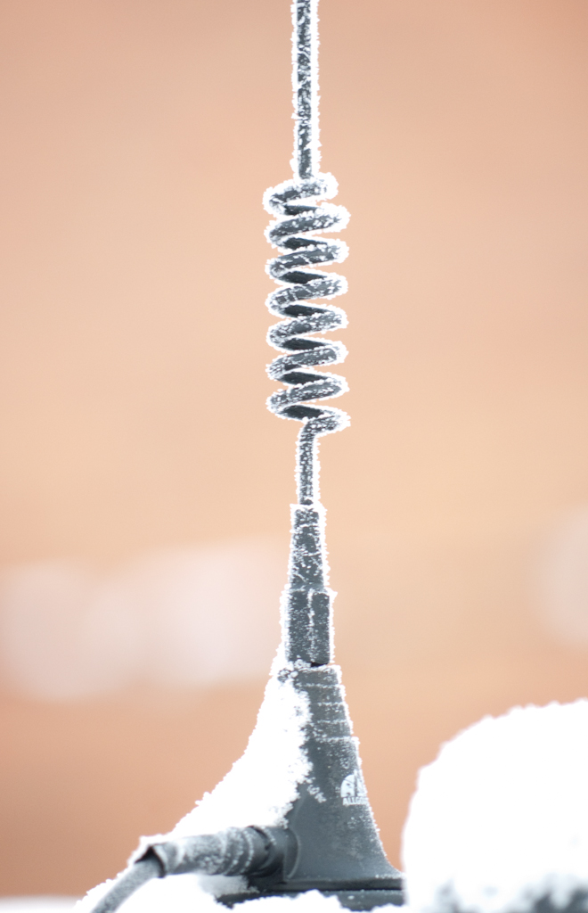
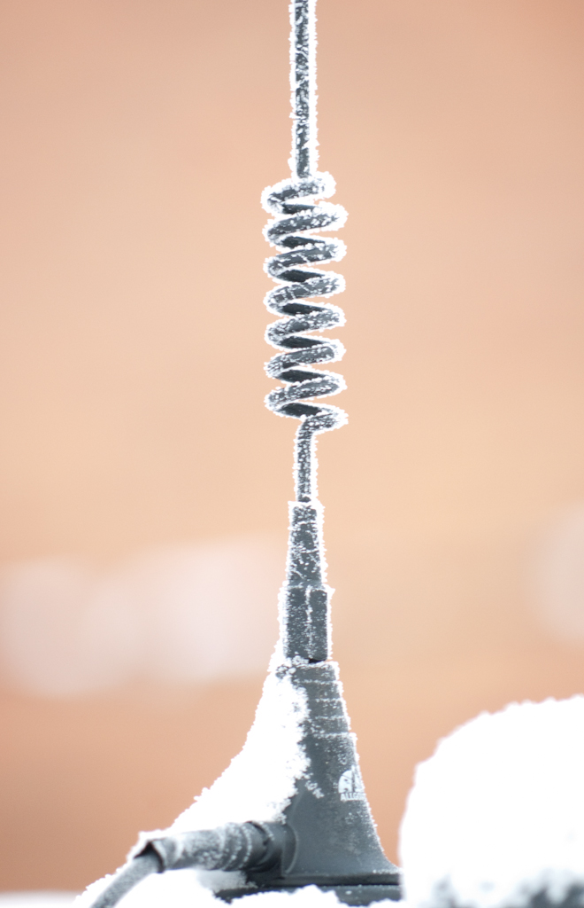

A loading coil or load coil is an inductor that is inserted into an electronic circuit to increase its inductance. The term originated in the 19th century for inductors used to prevent signal distortion in long-distance telegraph transmission cables. The term is also used for inductors in radio antennas, or between the antenna and feedline, to make an electrically short antenna resonant at its operating frequency. The concept of loading coils was discovered by Oliver Heaviside in studying the problem of slow signalling speed of the first transatlantic telegraph cable in the 1860s. He concluded additional inductance was required to prevent amplitude and time delay distortion of the transmitted signal. The mathematical condition for distortion-free transmission is known as the Heaviside condition. Previous telegraph lines were overland or shorter and hence had less delay, and the need for extra inductance was not as great. Submarine communications cables are particularly subject to the problem, but early 20th century installations using balanced pairs were often continuously loaded with iron wire or tape rather than discretely with loading coils, which avoided the sealing problem. Loading coils are historically also known as Pupin coils after Mihajlo Pupin, especially when used for the Heaveside condition and the process of inserting them is sometimes called pupinization.